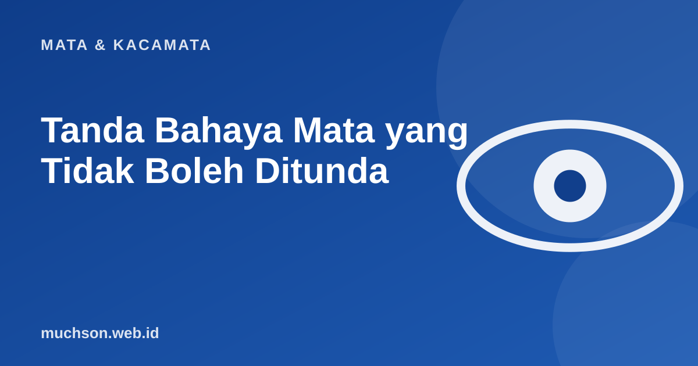

Beranda › Artikel › Mata & Kacamata
Mata & KacamataTanda Bahaya Mata yang Tidak Boleh Ditunda
Sebagian masalah mata boleh menunggu jadwal periksa biasa. Sebagian lain tidak. Mengetahui bedanya bisa menyelamatkan penglihatan. Artikel ini bukan pengganti pemeriksaan, tetapi membantu Anda memutuskan kapan harus bertindak cepat.

Jika Anda mengalami tanda di daftar merah di bawah, pergilah ke dokter mata atau unit gawat darurat segera. Jangan menunggu besok atau mencari tahu lewat internet.
Tanda yang butuh pemeriksaan segera
Tanda yang perlu diperiksa dalam beberapa hari
- Mata merah dengan kotoran yang terus berulang.
- Penglihatan kabur ringan yang menetap.
- Kesulitan melihat di malam hari yang makin berat.
- Lapang pandang menyempit perlahan (terlihat seperti melihat lewat terowongan).
- Mata sering berair atau perih tanpa sebab jelas.
Yang sering luput: penyakit yang tanpa gejala
Beberapa penyakit mata berkembang pelan tanpa rasa sakit, misalnya glaukoma pada tahap awal. Penglihatan menurun sedikit demi sedikit dan Anda tidak sadar. Itu alasan pemeriksaan mata rutin penting, terutama bila Anda berusia di atas 40 tahun, memiliki diabetes atau hipertensi, atau ada riwayat penyakit mata di keluarga.
Artikel ini bersifat edukatif dan bukan diagnosis. Jika ragu, lebih baik diperiksa. Penglihatan yang hilang akibat keterlambatan sering tidak bisa dipulihkan.